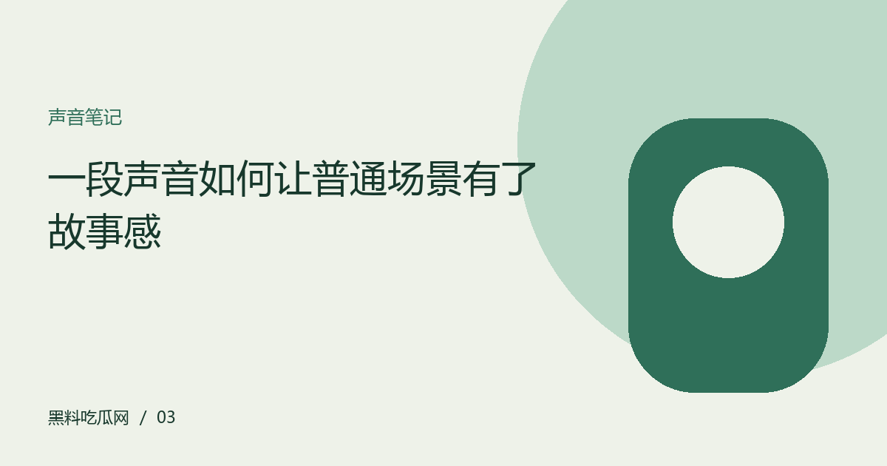

一段声音如何让普通场景有了故事感
不把氛围简单归功于滤镜。观察环境声、停顿与音乐之间的关系，理解视频如何组织注意力。

先听见场景本身
视频里的风声、脚步、门响与人群声，可以帮助观众判断空间与距离。它们有时十分细微，却比背景音乐更直接地建立环境。观看时可以短暂不看画面，注意哪些声音持续存在、哪些突然出现。这个练习不是为了推断录制设备，而是帮助区分场景信息与后期情绪提示，理解自己的注意力被什么吸引。
停顿为画面留下解释空间
连续音乐容易统一情绪，停顿则可能让观众重新留意呼吸、动作或空间。不同创作目的会需要不同节奏，不能把安静一概视为高级，也不能将丰富声轨等同于喧闹。分析时可以找到一个具体段落，说明声音变化与画面动作是否互相支持。描述效果比猜测创作者动机更有依据，也更便于他人交流。
音乐带来的联想不等于事实
同一段画面配上不同音乐，观众可能形成不同理解。音乐可以引导紧张、轻松或怀旧，却不能证明人物真实情绪与事件因果。对于资讯片段尤其要把原始声音与添加音轨分开。若只有剪辑版，就说明观看范围，不通过配乐推断当事人的意图。声音具有表达能力，也正因此需要谨慎阅读。
在不同设备上保留判断边界
手机扬声器、耳机与现场扩声可能改变细节的可听程度。个人听感可以分享，但不宜据此断言录制或混音存在某种具体故障。介绍制作过程需要可靠资料，作品分析则可以聚焦可观察结果。学会说明自己的观看条件，会让声音讨论更准确，也能帮助读者理解为什么同一段视频引发不同体验。
编辑演示：本文用于展示专题阅读；虚构情境不构成真实人物或事件报道。
下一篇：展览导览不必从头走到尾 →